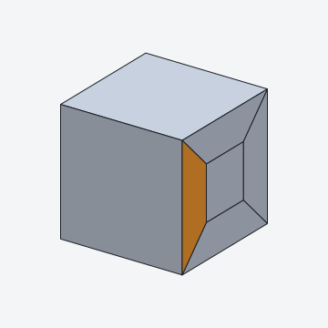
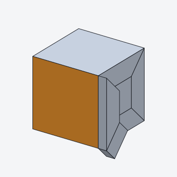
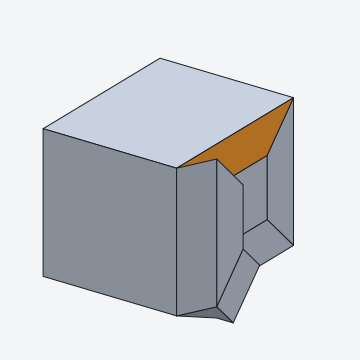

This step was built before it had been clearly agreed. It is recorded here as it happened, and it has not been reviewed.
Build the part that runs modeling moves on a cube, and a way to watch what it does. Prove that the same moves always give the same mesh.
| File | What it is |
|---|---|
executor.py | Runs a list of moves on a cube and records the mesh after every move. It uses Blender's bmesh library, with no window. |
index.html | The trace player. It steps through one recording in the browser. You can rotate the mesh. |
traces.json | 20 sample recordings, each 1 to 5 moves long. |
render.py | Draws each step of a recording as an image. It made the pictures on this page. |
A recording is called a trace. It holds the moves and the mesh after each one.
The trial move set has three moves. Each one acts on a single face.
| Move | Amounts | Effect |
|---|---|---|
| extrude | 0.25, 0.5 or 1.0 | Pushes the face out and adds side walls. |
| inset | 0.2 or 0.4 of the face's shortest edge | Adds a smaller face inside, with a ring of faces around it. |
| slide | -0.5, -0.25, 0.25 or 0.5 | Moves the face in or out. Adds no geometry. |
This is sample trace 3, frame by frame. The orange face is where the next move lands.



| Check | Result |
|---|---|
| Replay 2,000 random move lists and compare each mesh with the first run | All 2,000 matched, down to vertex and face order |
| Run the generator in two separate Blender processes and compare the files | Byte-identical files, same SHA-1 |
Generate round zero: about 10,000 traces. Its journal page would show a grid of sample shapes and counts of the moves used. This does not start until the owner agrees.